Released on March 5, 2008
(Next Release on March 12, 2008)
"The Long Run"
In 1979, the Eagles released “The Long Run”, an album whose title track includes the lyric “We’ll find out in the long run.” This week, EIA released revised long-run reference case energy projections which incorporate the estimated impact of the Energy Independence and Security Act of 2007 (EISA2007) that was signed into law in December 2007. This edition of TWIP reviews the new projections for long run trend in U.S. petroleum liquid markets. The full Annual Energy Outlook 2008 (AEO2008) report, including projections with differing assumptions on oil prices, the rate of economic growth, and the characteristics of new technologies, will be released in April 2008, along with regional projections and a report on the major assumptions underlying the projections.
Total consumption of liquid fuels grows at an average annual rate of 0.4 percent in the revised AEO2008 reference case, from 20.7 million barrels per day in 2006 to 22.8 million barrels per day in 2030 led by growth in transportation uses, which account for 68 percent of total liquid fuels demand in 2006, increasing to 73 percent in 2030. Improvements in the efficiency of vehicles, planes, and ships are more than offset by growth in travel.
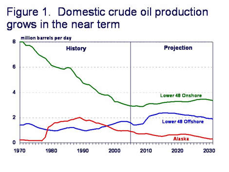
EISA2007 requires new light-duty vehicles, including both cars and trucks, to reach a corporate average fuel economy (CAFE) of 35 miles per gallon (MPG) by 2020, based on the Environmental Protection Agency (EPA) test value used to measure compliance with the CAFE standard. The higher fuel economy standards in EISA2007 significantly improve the in-use fuel economy of the stock of light-duty vehicles. In the reference case, the average in-use fuel economy for the stock of light-duty vehicles in 2030 increases to 38 percent above its 2006 level. EISA2007 also results in a shift in the mix of transportation vehicle fuels. Total biofuel consumption reaches 2.8 quadrillion Btu (29.7 billion gallons) in 2030 in the revised AEO2008 reference case, 2.3 quadrillion Btu (24.4 billion gallons) more than in 2006. This represents 11.3 percent of total motor vehicle fuel, on a Btu basis, in 2030.
U.S. crude oil production grows from 5.1 million barrels per day in 2006 to a peak of 6.3 million barrels per day in 2018, primarily due to increased production from the deep waters of the Gulf of Mexico and from the expansion of enhanced oil recovery operations in onshore areas supported by higher crude oil prices. Domestic production subsequently declines to 5.6 million barrels per day in 2030, as increased production from new smaller discoveries is inadequate to offset the declines in large fields in Alaska and the Gulf of Mexico (Figure 1). Total domestic liquids supply, including crude oil, natural gas plant liquids, refinery processing gains, and other refinery inputs or fuels (e.g., ethanol, biodiesel, biomass-to-liquids, and liquids from coal) grows from 8.3 million barrels per day in 2006 to 10.5 million barrels per day in 2030.
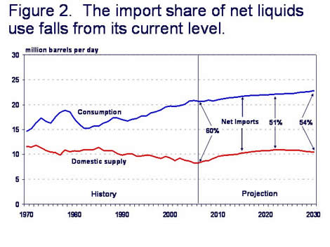
With strong growth in biofuels and the impact of higher fuel economy standards in the transportation sector due to EISA2007, the reliance on imported crude oil and products declines. While net crude oil imports grow to 11.1 million barrels per day in 2030 and net product imports (including net ethanol imports) are 1.3 million barrels per day in 2030, net U.S. import dependence falls to 54 percent in 2030 in the revised AEO2008, down from 60 percent in 2006.
The result is less reliance on traditional petroleum products and imported oil. However, even with the increase in use of biofuels and higher vehicle efficiency standards, petroleum products still supply 88 percent of total transportation energy demand (encompassing energy used by airplanes, rail, ships and pipelines as well as motor vehicles) in the revised AEO2008 reference case, compared with 96 percent in 2006.
Residential Heating Fuel Prices Continue To Break Records
Residential heating oil prices rose significantly for the third week in a row during the period ending March 3, 2008, the 22nd week of the survey this season. The average residential heating oil price set a new record high with a gain of 8.9 cents last week to reach 355.0 cents per gallon, which was an increase of 107.7 cents from the 22nd reporting period last year ending February 26, 2007. Wholesale heating oil prices increased 8.5 cents to reach 294.8 cents per gallon, which was an increase of 108.2 cents compared to last year.
The average residential propane price rose by 2.4 cents, to reach of 260.4 cents per gallon, which was the second new nominal all-time high price record in as many weeks. This was an increase of 57.5 cents compared to the 202.9 cents per gallon average for the same period last year. Wholesale propane prices showed a loss of 8.3 cents, from 177.4 to 169.1 cents per gallon. This was an increase of 60.8 cents from the February 26, 2007 price of 108.3 cents per gallon.
West Coast Gasoline Highest Price in History; Highway Diesel Prices Continue at Record Highs
Although gasoline prices continued to rise in most regions of the country, the upward momentum generally slowed. The national average retail price for regular gasoline rose 3.2 cents to 316.2 cents per gallon as of March 3, 2008. This was an increase of 65.7 cents above the price a year ago. Prices on the East Coast increased by 2.0 cents to 316.8 cents per gallon, 67.7 cents per gallon above the price last year. For the second week in a row, the average price in the Lower Atlantic was at an all-time high. The price advanced by 2.4 cents, to 317.7 cents per gallon. The Midwest was the only region of the country where the average price did not increase. There, the price was unchanged from the previous week at 308.0 cents per gallon. That was the lowest price for any region in the country and 61.5 cents per gallon above the price a year ago, The Gulf Coast average gasoline price increased by 3.2 cents to 308.8 cents per gallon, 72.1 cents per gallon higher than the price last year. The price in the Rocky Mountains went up by 3.7 cents, to 308.8 cents per gallon. The increase pushed the price in the Rocky Mountain region to the same level as that in the Gulf Coast. Not only did prices on the West Coast remain the highest on a regional basis, but the average price there surged, increasing by 12.1 cents to reach the all-time high for the region at 338.6 cents per gallon. That is 62.1 cents above the price at the same time last year and 0.8 cent above the previous all-time high set on May 14, 2007. In California, the average price for regular grade jumped by 13.1 cents to 345.9 cents per gallon, 56.2 cents above the price a year ago.
U.S. average retail diesel price continued its rapid upward climb advancing by 10.6 cents to 365.8 cents per gallon, reaching an all-time high for the second week in a row. The price was 103.2 cents above the price a year ago. Prices also reached all-time record levels in all regions of the country. On the East Coast, the price rose by 9.2 cents to 370.0 cents per gallon, 109.6 cents per gallon above the price last year. In the Midwest, the price jumped by 11.4 cents to 363.9 cents per gallon, an increase of 103.3 cents from a year ago. The price in the Gulf Coast area increased by 9.9 cents to 360.9 cents per gallon which was 102.2 cents above the level a year ago. The average price in the Rocky Mountains remained the lowest of any region last week although it moved up by 10.0 cents, to 357.3 cents per gallon. That was 91.5 cents above the price a year ago and 4.1 cents per gallon above the previous all-time high price for the region set on November 12, 2007. On the West Coast, the average price shot up by 12.7 cents to 373.6 cents per gallon, 94.1 cents above the price a year ago. In California, the average price surged, moving up by 13.1 cents to 380.3 cents per gallon, 90.6 cents higher than last year.
Propane Draw Below February Average
Despite winter weather that was severe at times in some of the major propane heating regions last month, overall February temperatures were actually close to normal. Consequently, the overall draw on propane inventories during February was 9.6 million barrels, or about 2 million barrels below the most recent 5-year average for the month. Contributing to the monthly stockdraw was last week’s 2.7 million barrel decline that positioned total propane inventories at an estimated 28.9 million barrels as of February 29, 2008. The weekly draw on regional inventories was strong in the Midwest and Gulf Coast that measured respective declines of 1.1 million barrels and 0.9 million barrels, while the East Coast region reported a 0.6 million barrels decline. The combined Rocky Mountain/West Coast region fell by a modest 0.1 million barrels during this same time. Propylene non-fuel use inventories remained relatively unchanged for the second consecutive week but continued to account for a larger share of total propane/propylene inventories of 8.1 percent.
Text from the previous editions of “This Week In Petroleum” is now accessible through a link at the top right-hand corner of this page.
| Retail Prices (Cents Per Gallon) | |||||||
| 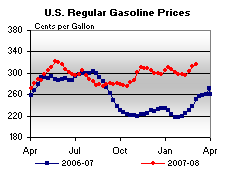 | 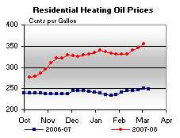 | ||||||
| 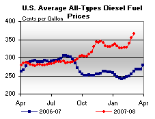 | 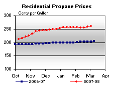 | ||||||
| Retail Data | Changes From | Retail Data | Changes From | ||||
| 03/03/08 | Week | Year | 03/03/08 | Week | Year | ||
| Gasoline | 316.2 | Heating Oil | 355.0 | ||||
| Diesel Fuel | 365.8 | Propane | 260.4 | ||||
| Spot Prices (Cents Per Gallon) | |||||||||||||||||||||||||||||||||||||||
| 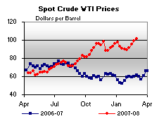 | 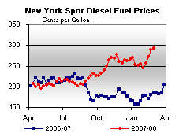 | ||||||||||||||||||||||||||||||||||||||
| 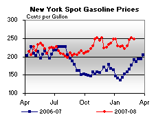 | 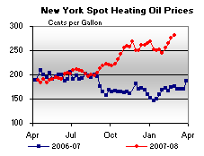 | ||||||||||||||||||||||||||||||||||||||
|
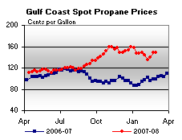 | ||||||||||||||||||||||||||||||||||||||
| Stocks (Million Barrels) | |||||||
| 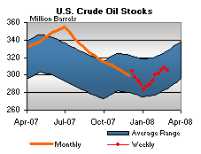 | 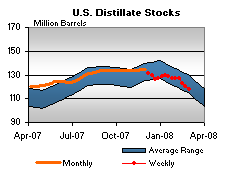 | ||||||
| 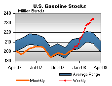 | 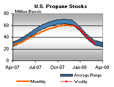 | ||||||
| Stocks Data | Changes From | Stocks Data | Changes From | ||||
| 02/29/08 | Week | Year | 02/29/08 | Week | Year | ||
| Crude Oil | 305.4 | Distillate | 117.6 | ||||
| Gasoline | 234.3 | Propane | 28.873 | ||||